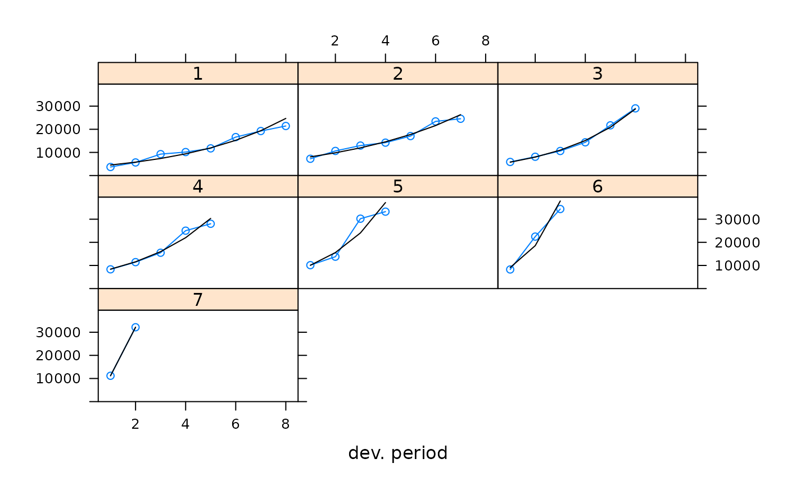

Plot method for a checkTriangleInflation object
plot.checkTriangleInflation.Rdplot.checkTriangleInflation, a method to plot the output of
checkTriangleInflation. It is designed to give a quick overview
of a checkTriangleInflation object and to check the inflation regression curves.
Usage
# S3 method for class 'checkTriangleInflation'
plot(x, col.line = "black", type = "b", xlab = "dev. period", ylab = NULL, ...)Arguments
- x
output from
checkTriangleInflation- col.line
Default: "black". Line color
- type
Default: "b". What type of plot should be drawn
- xlab
Default: "dev. period". X axis label
- ylab
Default: NULL. Y axis label
- ...
optional arguments. See
plot.defaultfor more details.
Details
plot.cyeff.test plots all the columns of the triangle (Development Periods) against the regression curves.
Author
Marco De Virgilis devirgilis.marco@gmail.com
Examples
test <- checkTriangleInflation(MedMal$MedMalOutstanding / MedMal$MedMalOpen)
plot(test)
